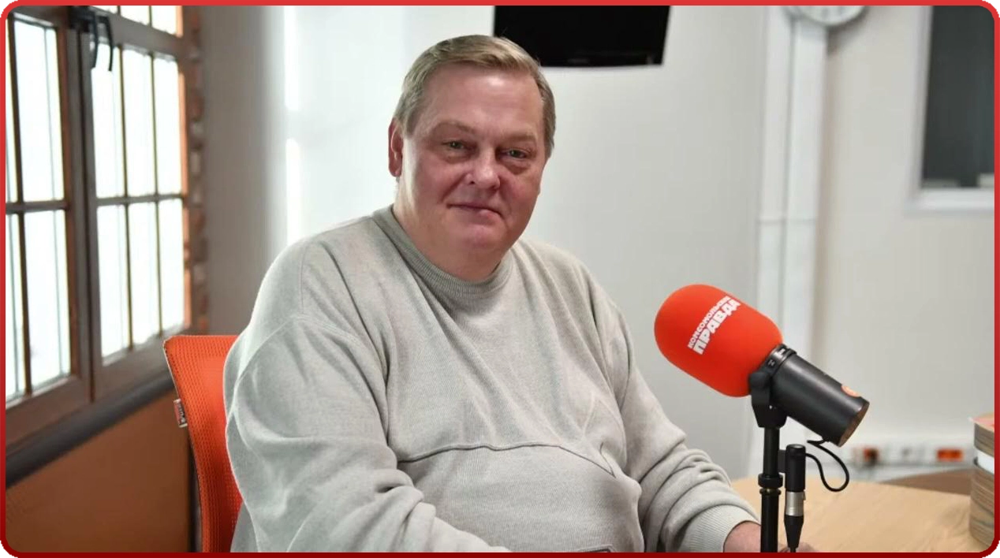
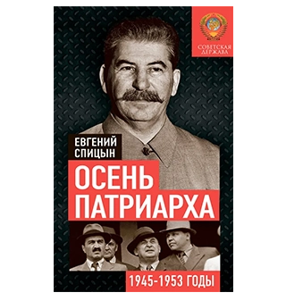
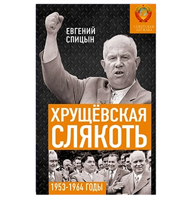
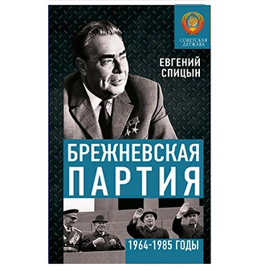
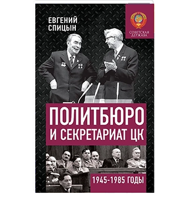
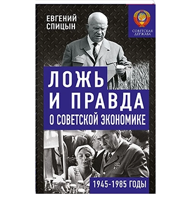
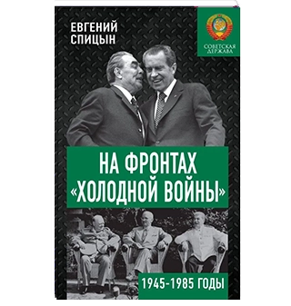

ЕВГЕНИЙ ЮРЬЕВИЧ СПИЦЫН
1966г.
Спицын Евгений Юрьевич — историк и публицист. В 1991 г. с отличием закончил исторический факультет МПГУ им. В.И.Ленина. Его учителями были известные советские историки: профессора А.Г.Кузьмин, Н.И.Павленко, В.Б.Кобрин, Г.А.Кошеленко, В.Г.Тюкавкин, Л.М.Ляшенко и другие. Именно работы Евгения Юрьевича стали исторической основной для этого сайта. В них автор рассказывает об истории СССР 1945-1989г. и разоблачает множество мифов и фальшивок об той эпохе. Создатель сайта приносит Е. Ю. Спицыну огромную благодарность за его труды и вклад в изучении истории нашей Родины и желает ему крепкого здоровья и дальнейших успехов.
КНИГИ Е.Ю. СПИЦЫНА





